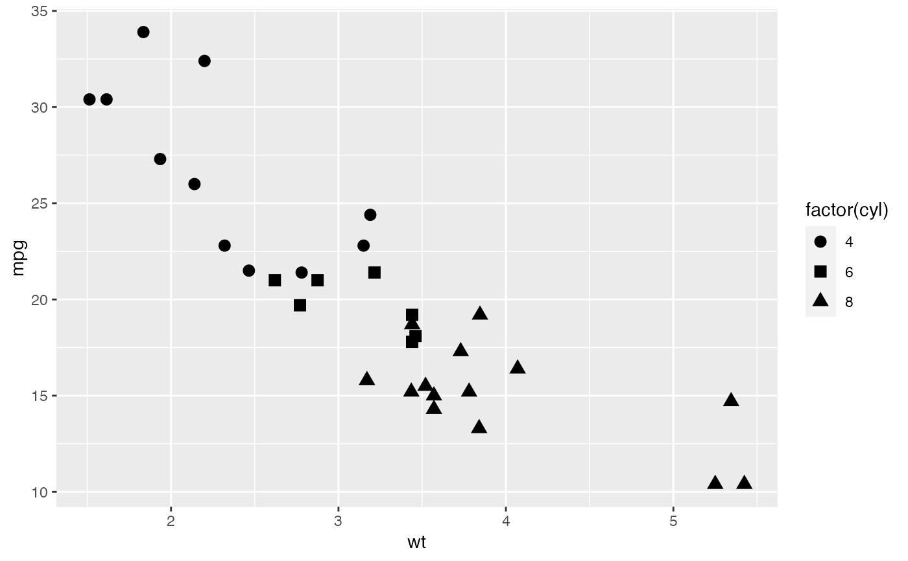
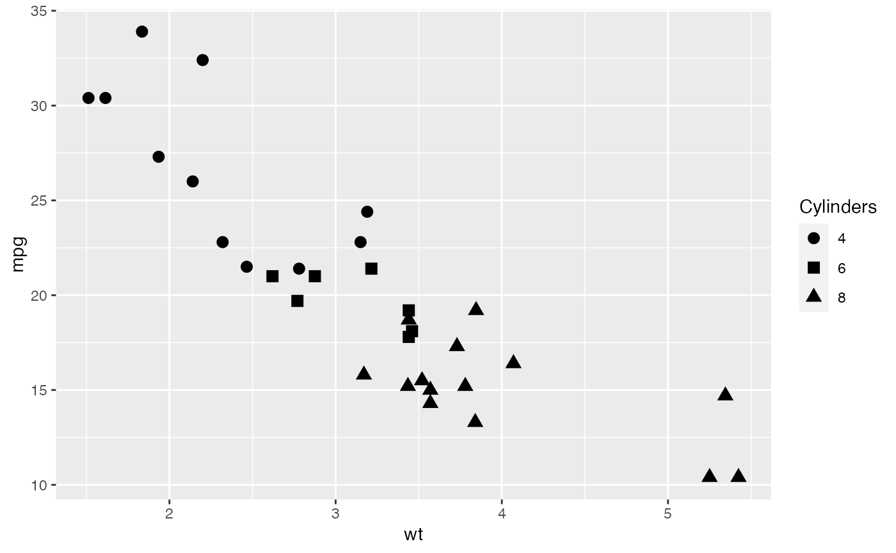
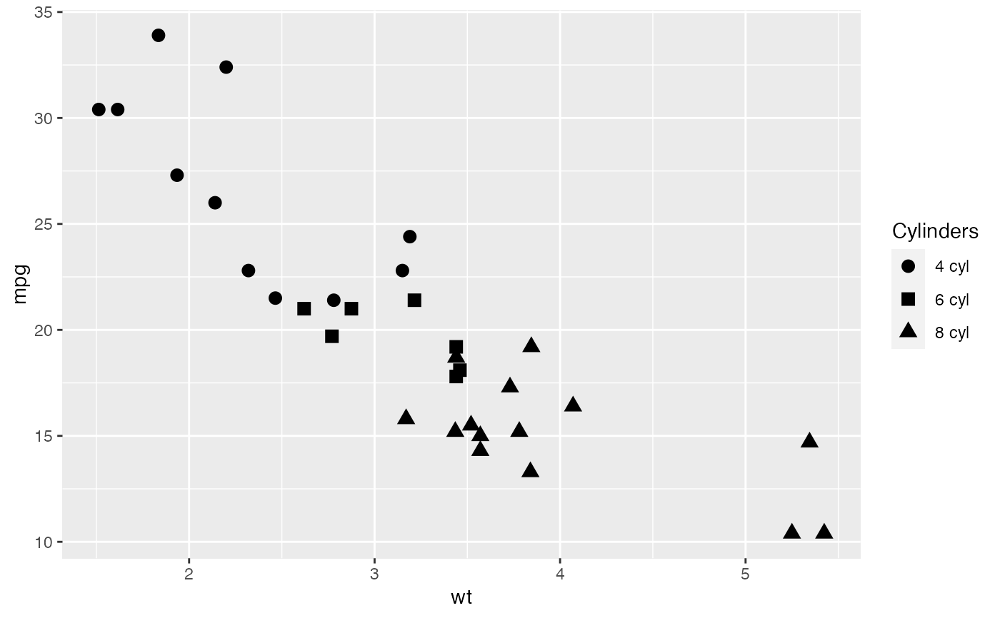
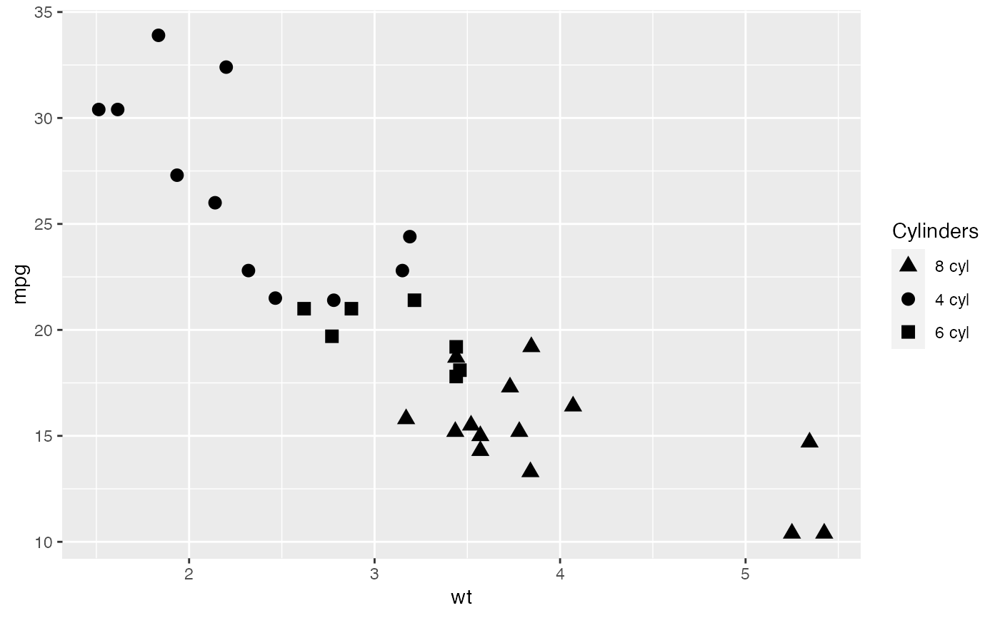
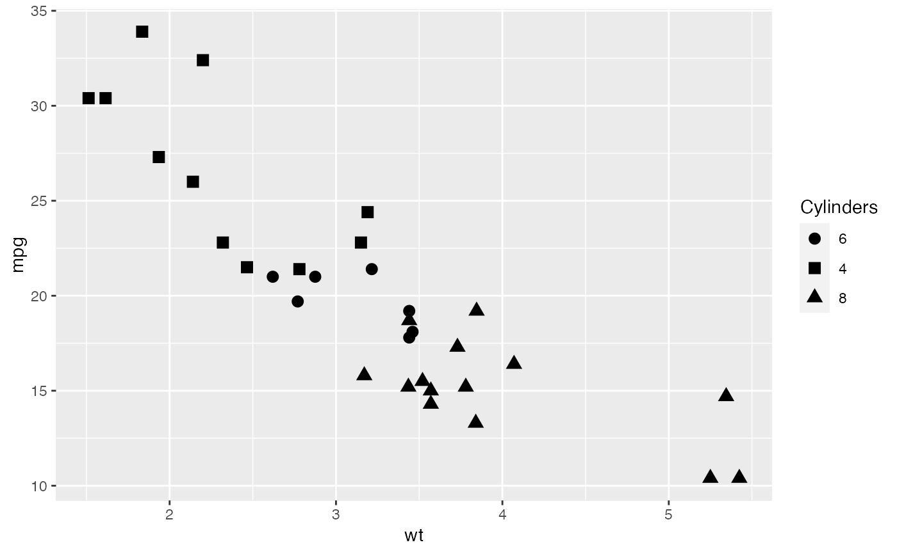
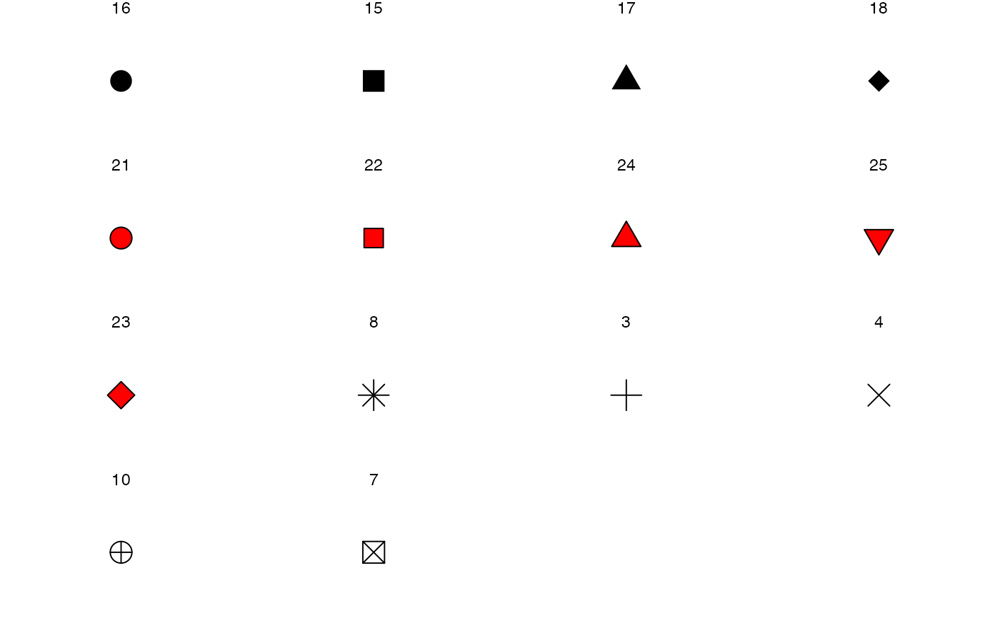
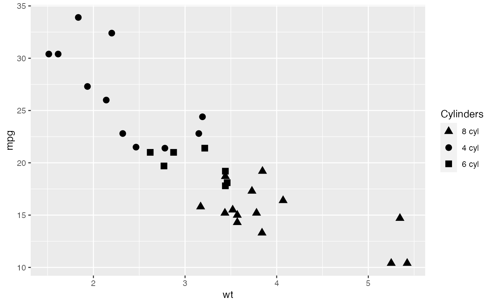
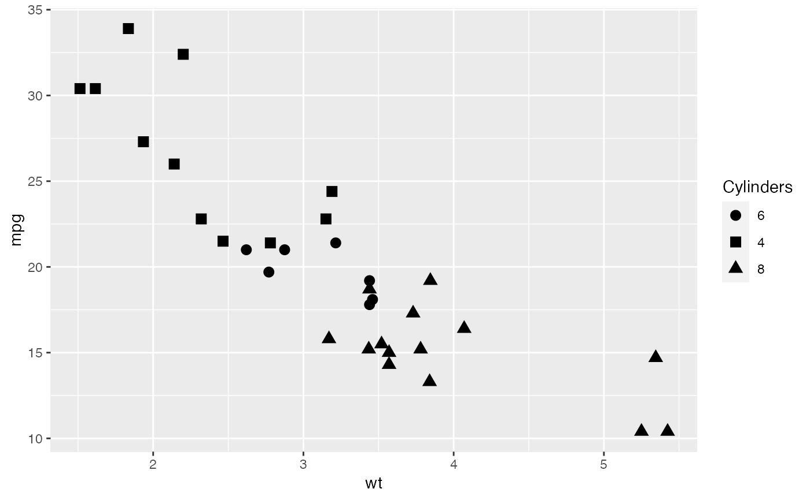
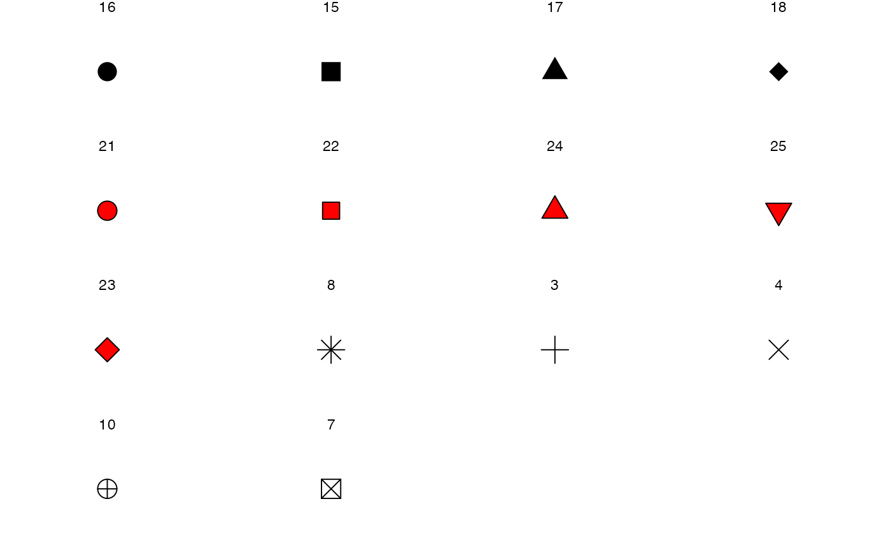

Shape scales that approximate those used in GraphPad Prism. No unicode characters are used, only the default symbols available in R.
scale_shape_prism(palette = "default", ...)Arguments
- palette
string. Palette name, one of:default,filled, orcomplete.- ...
Arguments passed on to
ggplot2::discrete_scalenameThe name of the scale. Used as the axis or legend title. If
waiver(), the default, the name of the scale is taken from the first mapping used for that aesthetic. IfNULL, the legend title will be omitted.breaksOne of:
labelsOne of:
NULLfor no labelswaiver()for the default labels computed by the transformation objectA character vector giving labels (must be same length as
breaks)An expression vector (must be the same length as breaks). See ?plotmath for details.
A function that takes the breaks as input and returns labels as output. Also accepts rlang lambda function notation.
limitsOne of:
NULLto use the default scale valuesA character vector that defines possible values of the scale and their order
A function that accepts the existing (automatic) values and returns new ones. Also accepts rlang lambda function notation.
expandFor position scales, a vector of range expansion constants used to add some padding around the data to ensure that they are placed some distance away from the axes. Use the convenience function
expansion()to generate the values for theexpandargument. The defaults are to expand the scale by 5% on each side for continuous variables, and by 0.6 units on each side for discrete variables.na.translateUnlike continuous scales, discrete scales can easily show missing values, and do so by default. If you want to remove missing values from a discrete scale, specify
na.translate = FALSE.na.valueIf
na.translate = TRUE, what aesthetic value should the missing values be displayed as? Does not apply to position scales whereNAis always placed at the far right.dropShould unused factor levels be omitted from the scale? The default,
TRUE, uses the levels that appear in the data;FALSEuses all the levels in the factor.guideA function used to create a guide or its name. See
guides()for more information.positionFor position scales, The position of the axis.
leftorrightfor y axes,toporbottomfor x axes.callThe
callused to construct the scale for reporting messages.superThe super class to use for the constructed scale
Value
Returns a ggproto object of class ScaleDiscrete which works with shape aesthetics.
Details
The default palette supports up to 9 values. It does not use
any symbols with a fill.
The filled palette supports up to 10 values. The first 5 symbols
have a fill.
The complete palette supports up to 14 values. Symbols 5 to 9
have a fill.
Examples
library(ggplot2)
## list all available shape palettes
ggprism_data$shape_palettes
#> $complete
#> # A tibble: 14 × 2
#> name pch
#> <chr> <dbl>
#> 1 circle small 16
#> 2 square 15
#> 3 triangle 17
#> 4 diamond 18
#> 5 circle filled 21
#> 6 square filled 22
#> 7 triangle filled 24
#> 8 triangle down filled 25
#> 9 diamond filled 23
#> 10 asterisk 8
#> 11 plus 3
#> 12 cross 4
#> 13 circle plus 10
#> 14 square cross 7
#>
#> $default
#> # A tibble: 9 × 2
#> name pch
#> <chr> <dbl>
#> 1 circle small 16
#> 2 square 15
#> 3 triangle 17
#> 4 diamond 18
#> 5 asterisk 8
#> 6 plus 3
#> 7 cross 4
#> 8 circle plus 10
#> 9 square cross 7
#>
#> $filled
#> # A tibble: 10 × 2
#> name pch
#> <chr> <dbl>
#> 1 circle filled 21
#> 2 square filled 22
#> 3 triangle filled 24
#> 4 triangle down filled 25
#> 5 diamond filled 23
#> 6 asterisk 8
#> 7 plus 3
#> 8 cross 4
#> 9 circle plus 10
#> 10 square cross 7
#>
## define a base plot
base <- ggplot(mtcars, aes(x = wt, y = mpg,
shape = factor(cyl))) +
geom_point(size = 3)
## works pretty much the same as ggplot2 scale_shape_manual
base +
scale_shape_prism(palette = "complete")

## change shape scale title in legend
base +
scale_shape_prism(
palette = "default",
name = "Cylinders"
)

## change shape labels in legend
base +
scale_shape_prism(
palette = "default",
name = "Cylinders",
label = c("4 cyl", "6 cyl", "8 cyl")
)

## change shape labels in legend with a function
base +
scale_shape_prism(
palette = "default",
name = "Cylinders",
label = function(x) paste(x, "cyl")
)
 ## change order of shapes in legend
base +
scale_shape_prism(
palette = "default",
name = "Cylinders",
label = function(x) paste(x, "cyl"),
breaks = c(8, 4, 6)
)

## to change which shape is assigned to which cyl
## you need to change the factor levels in the underlying data
base <- ggplot(mtcars, aes(x = wt, y = mpg,
shape = factor(cyl, levels = c(6, 4, 8)))) +
geom_point(size = 3)
base +
scale_shape_prism(
palette = "default",
name = "Cylinders"
)

## see all the shapes in a specific palette
# define a function for convenience
show_shapes <- function(palette) {
df_shapes <- ggprism_data$shape_palettes[[palette]][, -1]
df_shapes$pch_f <- factor(df_shapes$pch, levels = df_shapes$pch)
ggplot(df_shapes, aes(x = 0, y = 0, shape = pch)) +
geom_point(aes(shape = pch), size = 5, fill = 'red') +
scale_shape_identity() +
facet_wrap(~ pch_f) +
theme_void()
}
# show the shapes in the palette "complete"
show_shapes("complete")

## change order of shapes in legend
base +
scale_shape_prism(
palette = "default",
name = "Cylinders",
label = function(x) paste(x, "cyl"),
breaks = c(8, 4, 6)
)

## to change which shape is assigned to which cyl
## you need to change the factor levels in the underlying data
base <- ggplot(mtcars, aes(x = wt, y = mpg,
shape = factor(cyl, levels = c(6, 4, 8)))) +
geom_point(size = 3)
base +
scale_shape_prism(
palette = "default",
name = "Cylinders"
)

## see all the shapes in a specific palette
# define a function for convenience
show_shapes <- function(palette) {
df_shapes <- ggprism_data$shape_palettes[[palette]][, -1]
df_shapes$pch_f <- factor(df_shapes$pch, levels = df_shapes$pch)
ggplot(df_shapes, aes(x = 0, y = 0, shape = pch)) +
geom_point(aes(shape = pch), size = 5, fill = 'red') +
scale_shape_identity() +
facet_wrap(~ pch_f) +
theme_void()
}
# show the shapes in the palette "complete"
show_shapes("complete")
